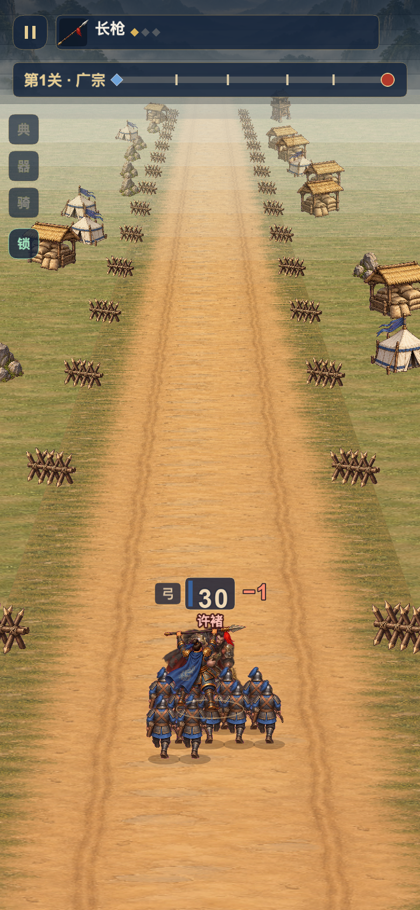
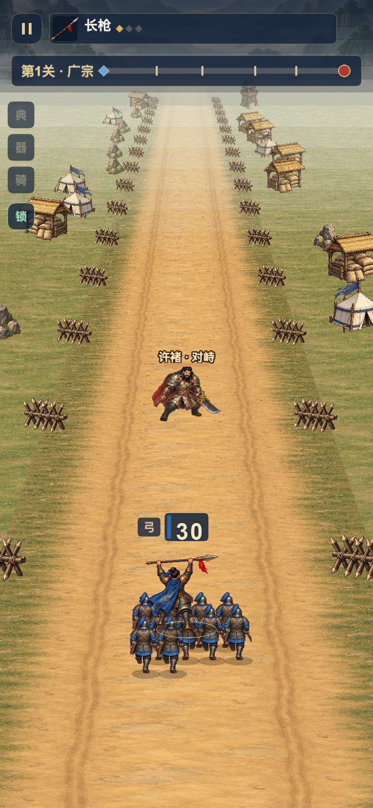
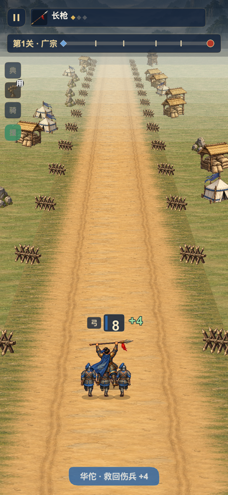
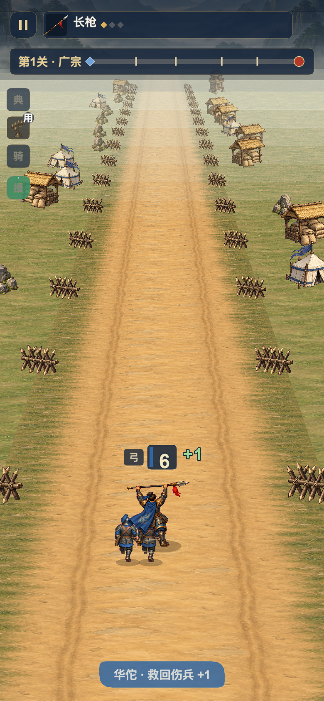
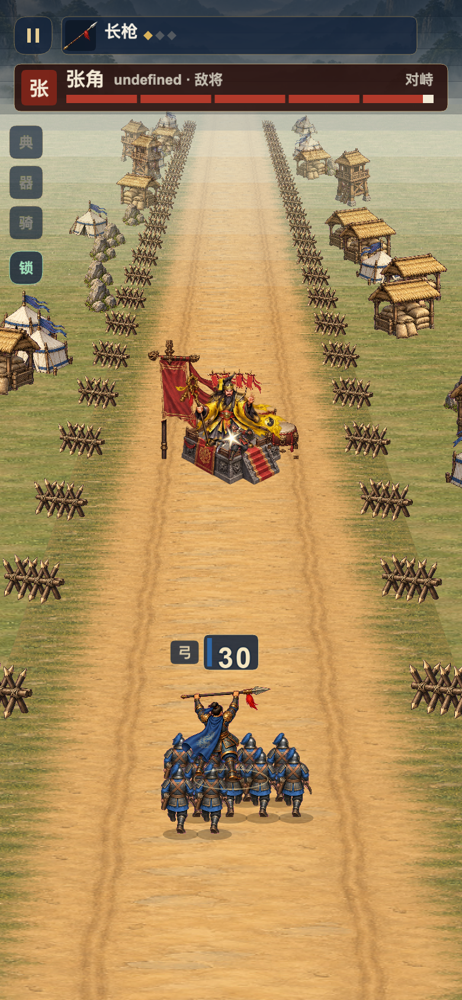
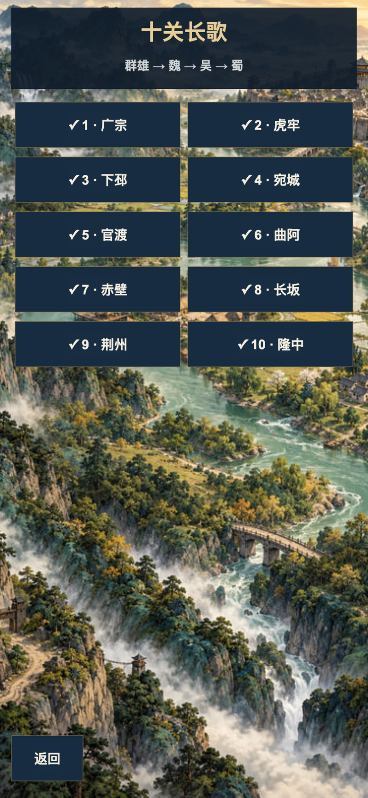
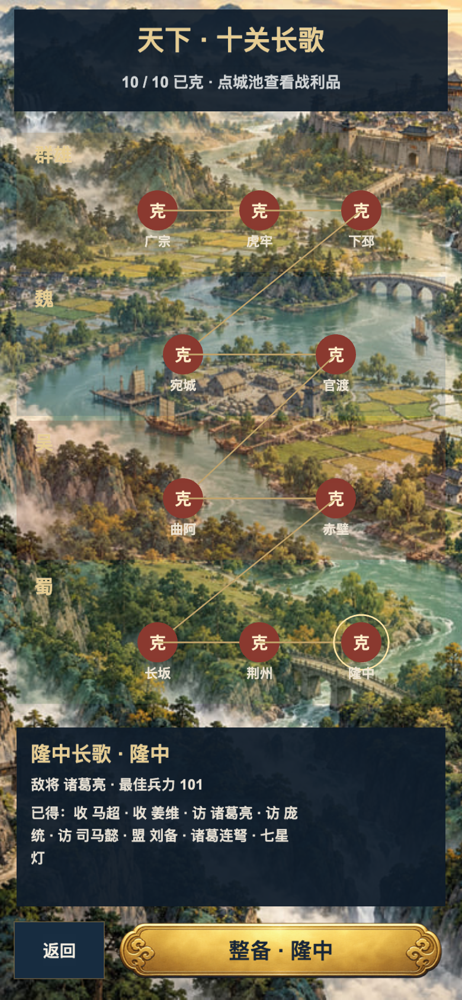

保留正式十关与认可视觉。这里是实际Cocos截图与原速录像，功能验证不替代手机/完整美术验收。
相同满18HP许褚、30兵、脚点距离0.2；旧版满血退场，新版进入交锋。


相同2兵、−12门、七星灯、华佗；旧版最终9，新版6。


相同穿透1直波、16.8处敌兵和17处首领；旧版首领97，新版100。

同一十关已完成测试存档、390×844视口；关卡列表改为区域节点与奖励抽屉。


从最终连续十关原速截取，无状态注入。
显式单名将5兵夹具，初始化后按实际输入交锋。
完成存档和致死负门夹具；真实UI操作与保存重载。
隔离新档，外部触控，完整未加速。静音视频，不作声音验收。